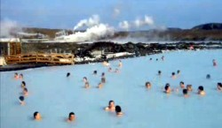

Ungarn ist außerordentlich
reich an Heilwässern. Unter
den zahlreichen Heilquellen unterschiedlicheer Zusammensetzung und
Heilwirkung wird der Hévizer Thermalsee als einer der
wertvollsten Heilwässer in der Welt anerkannt.
Bad
Hévíz
- der weltweit wahrschenlich bekannteste Kurort wird in
Ungarn schlicht nur Hévíz
genannt, sonst könnte man in Ungarn fast alle
Ortschaften mit
"Bad" prädikatisieren, wo man einmal in die Tiefe bohrt.
Für die Prädikatisierung zahlen die Gemeinden in
Deutschland rd. 50.000,- Euro. Wie das geht, sehen Sie
>>> hier
Lage: ca. 6 km
entfernt vom Nordwestzipfel des Plattensees und 4 km westlich von der
Ortschaft Keszthely am See.
Der Bad Hévízer See ist der
größte natürliche Thermalsee Europas. Der 4,7 Hektar große Thermalsee ist weltweit der
bedeutendste seiner Art. Die Wassertemperatur beträgt im Sommer etwa 33-35°C und
im Winter im Badehaus in der Mitte des Sees noch knapp 26-28° C.
Der Heilschlamm aus dem See ist einzigartig auf der ganzen Welt.
Sie geniessen in Bad Hévíz beste medizinische Betreuung in absolut
ruhiger und erholsamer Atmosphäre in unmittelbarer Nähe des
Thermalsees.
Eigenschaften des Thermalwassers: Zu den Besonderheiten des
Badesees gehört seine
Beschaffenheit. Das schwach alkalische und leicht radioaktive
Heilwasser enthält Kaliumsalze, Natrium, Magnesium,
Kohlendioxyd und Schwefelhydrate und der Schlamm weist einen hohen
Gehalt an Jod- und Östrogen auf.
Der Seeboden wird aus
hochorganischen Komponenten (Torfschlamm) gebildet, ganz im Gegenteil
zu den meisten Seen in Europa, die sich über Ton-, Lehm- und
Sandböden oder auch über felsigem Gestein erstrecken.
Ein auf Torfgrund gewachsener, heilwasserhaltiger Badesee ist
außerhalb von Bad Hévíz nur
noch in
Neuseeland, in der Ortschaft Rotoura bekannt. Dort wurde ein Heilbad
neben dem See gebaut.
Schwefel und Radon machen die grosse Heilwirkung des Thermalwassers
aus. Eine Spezialität von Hévíz ist der
den
Teichboden in 1 m dicken Schicht bedeckende Heilschlamm. Es handelt
sich um einen Torfschlamm vorwiegend pflanzlichen Ursprungs, der auch
mineralische Bestandteile enthält. Der Schlamm fasst sich fein
und
angenehm an, klebt nicht und ist besonders hydrophil. Auf Grund seiner
hohen Wärmekapazität eignet er sich besonders gut
für
Schlammpackungen.
Indikationen: Eine
Kur in Bad Hévíz ist bei einer ganzen Reihe von
verschiedenen Krankheiten der bewegungsorgane indiziert. Im
Vordergrund stehen rheumatische Erkrankungen des Bewegungsapparates
(Ausnahme akute Entzündungen), wie
Wirbelsäulenbeschwerden (Bandscheibe!) und Erkrankungen der
Gelenke und Knochen. Alle Arten von Arthritiden (chronische
Polyarthritis) und Arthrosen werden günstig beeinflusst,
unabhängig davon, ob die Krankheit in den Gelenken der
Gliedmassen oder in der Wirbelsäule auftritt.
Weitere Indikationen sind Spondylose, Bechterew Krankheit, Discopathie,
Muskelrheumatismus, Nervenerkrankungen (Verletzung oder
Lähmung), Sehnenscheidenentzündungen, Nachbehandlung
von Verletzungen, Altersregeneration. Bei allen genannten Erkrankungen
und Beschwerden wird von Ärzten – auch zur
Unterstützung der nachfolgend genannten Behandlungen
– eine Badekur empfohlen.
Die "Subaquale Traktion" ist eine Spezialität des Heilbades.
Das Wesentliche an diesem Verfahren ist, dass an einem, auf das
Hüftbein angelegten Gürtel oder auf die
Füsse 2 bis 5 Stück 5 kg Gewichte gehängt
werden und der Patient so an einer entsprechenden Haltevorrichtung - am
Nacken oder an den Achselhöhlen - 15-20 Minuten hindurch bis
zum Hals im Wasser hängt. Die Ergebnisse dieses in Ungarn und
auch auf der ganzen Welt schon allgemein bekannten Traktionsbades sind
vielversprechend.
Die Kur zeigt nicht nur bei rheumatischen Erkrankungen der Gelenke und
Knochen gute Erfolge, sondern auch bei Bewegungsbehinderung infolge
Verletzungen oder von Nervenlähmungen, ferner als Folge
Knochenkrankheiten und in Fällen von angeborenen oder
erworbenen Deformitäten der Bewegungsorgane. Die
äusserst schmerzvolle Lumbago und bestimmte Halsbeschwerden
werden in Hévíz ebenfalls mit Erfolg behandelt.
Die Behandlungen erfolgen in den einzelnen Kurzentren, wo aufgrund der
diagnostischen Untersuchungen des Facharztes die modernsten
Heilmethoden
der Balneo-, Elektro- und Mechanotherapie angewendet werden.
Therapie-
und Heilangebote:
Balneo-, Physio-, Elektro-, Hydro-, Lichttherapie und Massagen.
In Bad-Hévíz haben sich viele Zahnarztpraxen
und Optiker auf deutschsprachige
Kunden eingestellt. Sie bieten in ihren, mit modernsten
Behandlungsinstrumenten ausgestatteten Praxen die neuesten
Behandlungsmethoden kostengünstig an, die auch in Deutschland
nur von wenigen Zahnärzten angeboten werden können.
Ein
halbprofessioneller Berichterstatter beschreibt den
Thermalsee auf Englisch und gibt praktische Tipps für die
Benutzung des Badebetriebes:
Über dieses Video:
Der englischsprachige Berichterstatter beschreibt den
Thermalsee und gibt praktische Tipps vor Ort, wie man im See baden
soll. Er macht dabei einige Bemerkungen, die
über seine mangelnde Ungarnkentnisse zeugen, aber
die betreffen nicht den See und sind von
Ausländern
auch nicht anders zu erwarten. Aus der ungarischen Hauptstadt Budapest fährt man
mit dem Auto, bei selten erlaubter Höchstgeschwindigkeit von
130 kmh, überwiegend auf der Autobahn nahezu drei Stunden lang
die Strecke von 195 km (lt. Googlemaps). Mit der Eisenbahn
erreicht man Hévíz in 3- bis 4 oder auch
in 5 Stunden, je nachdem, welcher Zug mit einer passenden
Ankunftszeit gewählt wird.
Die Realität
zum Vergleich: Der Bad Hévízer See
ist der größte natürliche Thermalsee
Europas. Das steht in ungarischen
Reiseprospekten seit vielen Jahrzehnten. Wer
diese Behauptung einmal aufstellte, war möglicherweise
noch nie auf
Island, wo eine Reihe von geothermischen Naturseen deutlich
größer
sind, als der Thermalsee von Hévíz. Nicht zu
sprechen von der Blauen
Lagune im Lande der Nachfahren der Vikinger, die nach einem klaren
Volksentscheid von einer EU-Mitgliedskandidatur, wie von der EU
laufend ins Gespräch gebracht, nie mehr hören wollen.

Das Heilwasser der Blauen Lagune ist
kieselsäurereich (dadurch blauschimmernd) und
salzwasserhaltig, es wird u.a. gegen Schuppenflechte empfohlen. Sie
wurde aus einer mit 240°C besonders heißen,
tiefen Quelle künstlich
aufgefüllt, aber auch das Badehaus
inmitten des Thermalsees in Hévíz
wird seit langer Zeit aus der Quelle
durch Leitungsrohren künstlich gespeist, damit das Badewasser
an Frosttagen in der kalten Jahreszeit eine Temperatur von knapp
über 20°C im Badehaus
erreicht.
Die Blaue
Lagune hat eine Badetemperatur von 38°C im Winter - und ist
damit genauso warm, wie der Thermalsee in Bad
Hévíz bis in den 1960er Jahren auch noch im
Winter war. Seitdem
kühlt der See aus verschiedennen Gründen aus. Vor
allem die nördlich gelegenen Bauxitgruben haben die
wasserführenden Bodenschichten so
zerstört, dass das aus nördlicher Richtung
zufliessende Thermalwasser in der Tiefe seitlich anderswohin
versickert, aber auch die "eigenen Quellen" der in Bad
Hévíz immer mehr neu gebauten
Thermalhotels schöpfen aus immer größerer
Tiefe und untergraben damit die Quelle des natürlichen
Thermalsees von Bad Hévíz.
Der
Bad
Hévízer Schlamm ist auf der ganzen Welt
einzigartig - steht in den ungarischen Reiseprospekten.
Ähnlich
"einzigartige" Wirkung ruft der Schlamm der Blauen Lagune hervor
und wird ebenso zu Gesichtspackungen empfohlen, wie in
Bad Hévíz.
Veranstaltungen in Bad
Hévíz
- Orgel Konzerte in der
katholischen Kirche
- Orgel Konzerte in der
evangelischen Kirche
- Hin und wieder finden Ausstellungen im Ortshistorischen Museum und in
der städtischen Galerie statt.
Hoteltipps
Für Kuren bietet
sich das Rheumakrankenhaus Szent
Andrásmit
Hotel direkt am See an. - Das Kurkrankenhaus wird von einer
gemeinnützigen Nonprofit Gesellschaft betrieben und
medizinisch von einer wissenschaftlich orientierten
Ärzteschaft betreut. Hier geht es in erster Linie um
die Heilung, Prävention und Rehabilitation, wie in
den Krankenhäusern und weniger darum, den Gästen auch
noch sinnlose Kuren aufzuschwätzen, wie wir es leider schon
hier und da in Hévíz erleben mussten.
Alle anderen Hotels in
Hévíz sind nach unseren Erkenntnissen
geschäftsorientierter Kommerz. Über
die Gemeinnützige Gesellschaft im Kurkrankenhaus (Eigenangabe
der Gesellschaft):
"Die
Hévízheilbad und St. Andreas Rheumaklinik
Gemeinnützige Gesellschaft ist Verwalter des
Hévízer Heilbades, eines einmaligen Natur- und
Nationalschatzes, welches eines der wichtigsten Mittel der effektiven
Heilung zahlreicher Krankheiten ist. .... Nach Möglichkeit hat die
Anstalt das Ziel, eine effektive Organisation zu
schaffen, bzw. zu erhalten, welche Organisation die, auf Ressourcen
basierende Konzeption eines Gesundheitsdienstleiters in
Übereinstimmung mit den nationalen und internationalen
Erwartungen wirtschaftlich erfolgreich realisiert. Als Ergebnis dieser
Tätigkeit wird die Anstalt zu einer, auch in Europa anerkannte
Stätte der Prävention,
Heilung, Rekreation, bzw. Rehabilitation."
Für weniger
kurbedürftige motorisierte Touristen, denen es darauf
ankommt, kostengünstig auch an gewissen kulturellen
Programmen in einer weniger langweiligen
Ortschaft in der Nähe des
Thermalsees teilzunehmen, empfehlen wir das Hotel
Abbázia
in Keszthely, rd. 5 km entfernt von
Hévíz. Die Kleinstadt direkt am
Plattensee hat rd.
20.000 Einwohner und wird in Ungarn als Hauptstadt des Balatons
bezeichnet.
Für weniger
kurbedürftige Touristen empfehlen wir das Hotel
Erzsébetdirekt
am See oder das Hotel
Palaceetwa
200 m entfernt vom See. Beide Hotels sind relativ
kostengünstig.
Während es im Hotel Erzsébet eher um die Bewirtung
geht, werden im Hotel Palace praktisch alle Kuren
kostengünstig angeboten. Geheimtipp: Über das
Hotelportal direkt im Hotel gebucht ist
das
Palace Hotel nach unseren Erkenntnissen deutlich (z.T. mehrfach)
günstiger, als bei bekannten Internetvermittlern.
Sie wollen endlich einmal
eine Kur in Bad Hévíz machen? - Zu
den Besonderheiten des Badesees gehört seine
Beschaffenheit.
Das schwach alkalische und leicht radioaktive
Heilwasser enthält Kaliumsalze, Natrium, Magnesium,
Kohlendioxyd und Schwefelhydrate
und der Schlamm weist einen hohen
Gehalt an Jod- und Östrogen auf. Der Seeboden wird aus
hochorganischen Komponenten (Torfschlamm) gebildet.